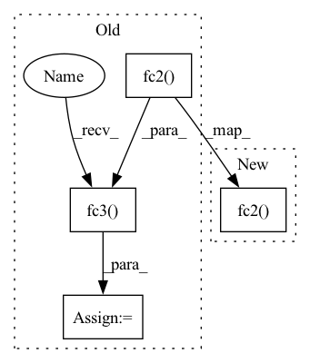

Pattern ID :40780

Before Change
def forward(self, state):
x = F.relu(self.fc1(state))
x = F.relu(self.fc2(x))
out = self.fc3(x)
return out
After Change
def forward(self, state):
x = F.relu(self.fc1(state))
out = self.fc2(x)
return out
In pattern: SUPERPATTERN
Frequency: 3
Non-data size: 4
Instances
Fragment ID: 115178089
Project Name: chaovven/pyrl
Commit Name: ccf38a739c8b1ccbcf11b94cc2aa3e6333533143
Time: 2020-03-05
Author: aaron.csie@gmail.com
File Name: modules/agent/categorical_policy.py
M Class Name: CategoricalPolicy
N Class Name: CategoricalPolicy
M Method Name: forward(2)
N Method Name: forward(2)
M Parent Class: nn.Module
N Parent Class: nn.Module
M File Name: modules/agent/categorical_policy.py
N File Name: modules/agent/categorical_policy.py
M Start Line: 18
M End Line: 20
N Start Line: 17
N End Line: 18
'>
Before Change
x = F.relu(self.pool(self.conv2(x)))
x = x.view(-1, 16 * 5 * 5)
x = F.relu(self.fc1(x))
x = F.relu(self.fc2(x))
x = self.fc3(x)
return x
After Change
x = x.view(-1, 20 * 30 * 30)
x = F.relu(self.fc1(x))
x = F.dropout(x, training=self.training)
x = self.fc2(x)
return x
'>
Fragment ID: 115178088
Project Name: abdullahselek/plant-disease-classification-pytorch
Commit Name: d9334944630cdb79c98f1ab59b926555a52d2dd9
Time: 2020-11-08
Author: abdullahselek@gmail.com
File Name: plant_disease_classification_pytorch/network.py
M Class Name: CNN
N Class Name: CNN
M Method Name: forward(2)
N Method Name: forward(2)
M Parent Class: nn.Module
N Parent Class: nn.Module
M File Name: plant_disease_classification_pytorch/network.py
N File Name: plant_disease_classification_pytorch/network.py
M Start Line: 28
M End Line: 36
N Start Line: 20
N End Line: 27
'>
Before Change
def forward(self, input):
x = self.dp1(self.relu1(self.bn1(self.fc1(input))))
x = self.relu2(self.bn2(self.fc2(x)))
x = self.fc3(x)
return x
// TODO
After Change
def forward(self, input):
x = self.dp1(self.relu1(self.bn1(self.fc1(input))))
x = self.fc2(x)
return x
// TODO
'>
Fragment ID: 115178087
Project Name: pykale/pykale
Commit Name: f4e1b5eacb4e0ebf3a23deed57d2592e623a9e8f
Time: 2021-02-23
Author: xianyuan.liu@sheffield.ac.uk
File Name: kale/predict/class_domain_nets.py
M Class Name: ClassNetVideo
N Class Name: ClassNetVideo
M Method Name: forward(2)
N Method Name: forward(2)
M Parent Class: nn.Module
N Parent Class: nn.Module
M File Name: kale/predict/class_domain_nets.py
N File Name: kale/predict/class_domain_nets.py
M Start Line: 151
M End Line: 153
N Start Line: 148
N End Line: 149